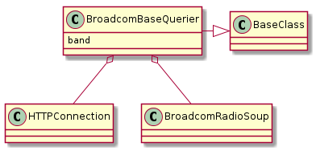
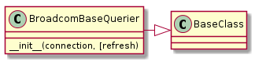
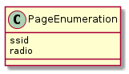
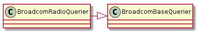
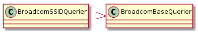
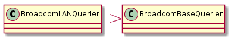

In order to trim down the class-explosion that seems to be going on, all the querys to the Broadcom are combined into two classes Broadcom5GHzQuerier and Broadcom24GHzQuerier.
Because I am trying to repeat calls to the server the set_page decorator differs from the one used by the commands.
# a decorator to set the page
def set_page(method):
"""
Decorator: sets connection.path to self.asp_page before, sleeps after
"""
def _method(self, *args, **kwargs):
if not self.refresh and self.current_page == self.asp_page:
debug_message = ('Skipping this method (refresh={0},'
'current_page={1})').format(self.refresh,
self.current_page)
self.logger.debug(debug_message)
return _method
self.logger.debug('Setting current_page to {0}'.format(self.asp_page))
self.current_page = self.asp_page
self.logger.debug("Setting connection.path to '{0}'".format(self.asp_page))
self.connection.path = self.asp_page
outcome = method(self, *args, **kwargs)
return outcome
return _method


BroadcomBaseQuerier(connection[, refresh]) |
A querier for the Broadcom |
BroadcomBaseQuerier.data |
Data to give the connection (used to specify an interface if needed) |
BroadcomBaseQuerier.asp_page |
|
BroadcomBaseQuerier.soup |
A Broadcom Soup to parse the html |
BroadcomBaseQuerier.set_soup(*args, **kwargs) |
The refresh parameter, if False (the default) will cause the Queriers to only pull a page if it is not already loaded, that way multiple checks will not incur the overhead of waiting for the server (and more significantly the sleeps after each call).
Since there are an arbitrary number of pages to add (assuming that not all are being used), they will be identified by an enumeration. If a page is added (i.e. it gets a set_<page>_soup method) then it should be added to the enumeration.

In the set_<page>_soup methods they should check both the refresh variable and the current_page to see if the desired page should be loaded, and if it is loaded, the current_page should be set to the appropriate PageEnumeration value (e.g. self.current_page = PageEnumeration.ssid).
refresh |
current_page=PageEnumeration |
Set the Soup |
|---|---|---|
| False | False | True |
| False | True | False |
| True | False | True |
| True | True | True |
As you can see from the truth table, there is only one case where you will not load the page – , which can be re-written . But, on reflection, it actually makes more sense to short-circuit the one case where we do nothing – .
This is a querier for the radio.asp page.

BroadcomRadioQuerier([band]) |
An aggregator for the two band-queriers |
BroadcomRadioQuerier.soup |
A BroadcomRadioSoup |
BroadcomRadioQuerier.data |
the data to tell the connection to choose an interface |
BroadcomRadioQuerier.asp_page |
radio.asp |
BroadcomRadioQuerier.band |
The band for the chosen interface (2.4 or 5) |
BroadcomRadioQuerier.sideband |
The sideband setting (Upper or Lower), empty for 2.4 GHz |
BroadcomRadioQuerier.channel |
Get the current channel for the band |
BroadcomRadioQuerier.state |
Get the interface state |
BroadcomRadioQuerier.mac_address |
Gets the mac-address for this band |
Example to get the channel for each band:
q = BroadcomRadioQuerier(connection=connection, band='2.4')
channel_24 = q.channel
q.band = 5
channel_5 = q.channel
A querier for the ssid.asp page.

BroadcomSSIDQuerier([band]) |
A querier for the ssid.asp page |
BroadcomSSIDQuerier.soup |
A BroadcomSSIDSoup |
BroadcomSSIDQuerier.data |
the data to tell the connection to choose an interface |
BroadcomSSIDQuerier.asp_page |
ssid.asp |
BroadcomSSIDQuerier.band |
The band for the chosen interface (2.4 or 5) |
BroadcomSSIDQuerier.ssid |
Get the interface SSID |
A querier for the lan.asp page.

BroadcomLANQuerier(*args, **kwargs) |
A querier for the lan.asp page |
BroadcomLANQuerier.asp_page |
lan.asp |
BroadcomLANQuerier.soup |
The BroadcomLANSoup |
BroadcomLANQuerier.dhcp_state |
gets the dhcp_state from the soup |